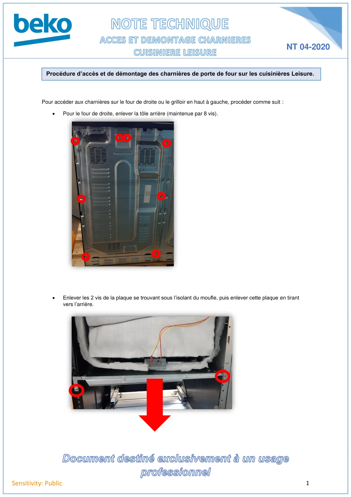
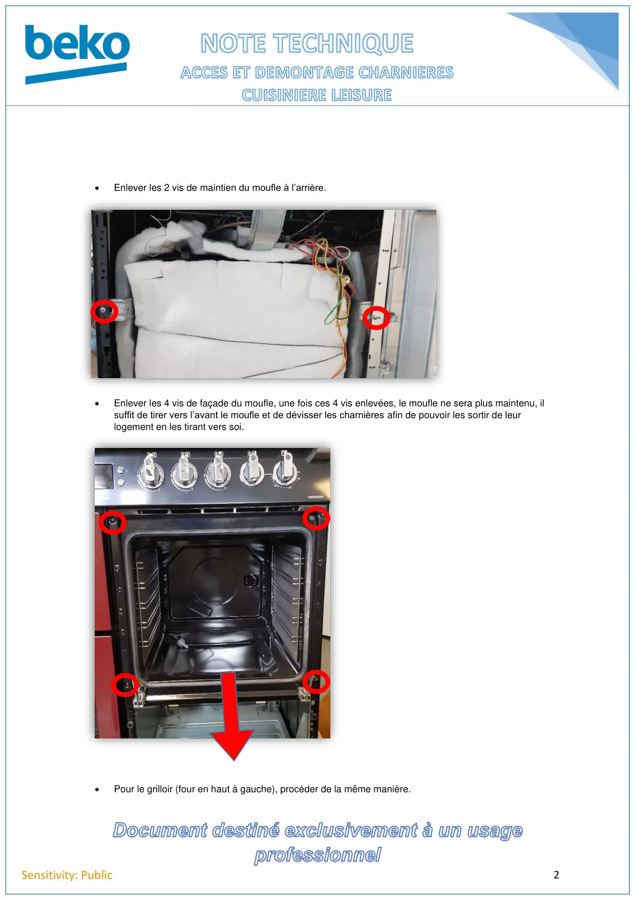

Chgt charnière four LEISURE

1Sensitivity: PublicPour accéder aux charnières sur le four de droite ou le grilloir en haut à gauche, procéder comme suit :•Pour le four de droite, enlever la tôle arrière (maintenue par 8 vis).•Enlever les 2 vis de la plaque se trouvant sous l’isolant du moufle, puis enlever cette plaque en tirantvers l’arrière.Procédure d’accès et de démontage des charnières de porte de four sur les cuisinières Leisure.NT 04-2020
1 / 2
2Sensitivity: Public•Enlever les 2 vis de maintien du moufle à l’arrière.•Enlever les 4 vis de façade du moufle, une fois ces 4 vis enlevées, le moufle ne sera plus maintenu, ilsuffit de tirer vers l’avant le moufle et de dévisser les charnières afin de pouvoir les sortir de leurlogement en les tirant vers soi.•Pour le grilloir (four en haut à gauche), procéder de la même manière.
2 / 2